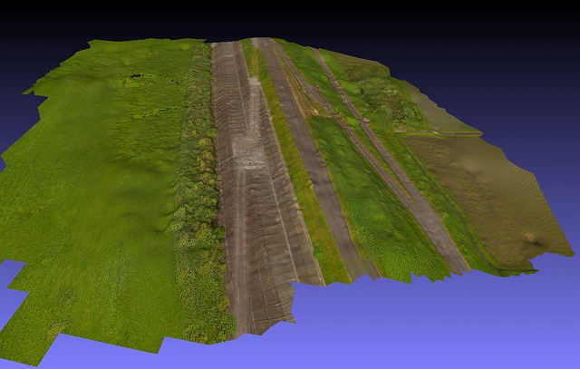
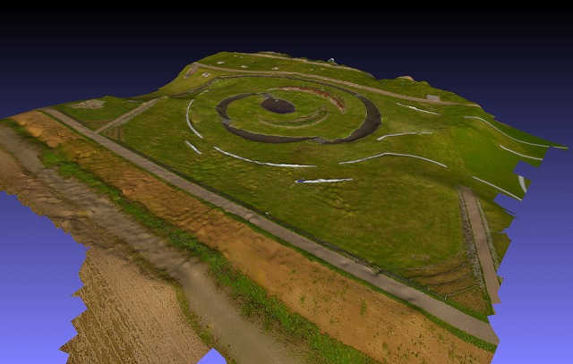
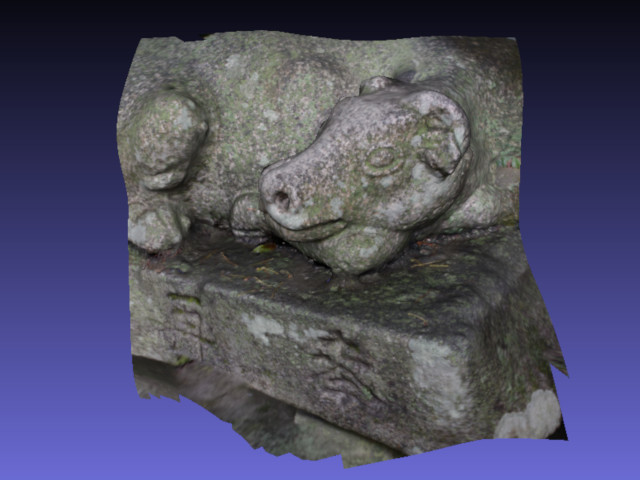
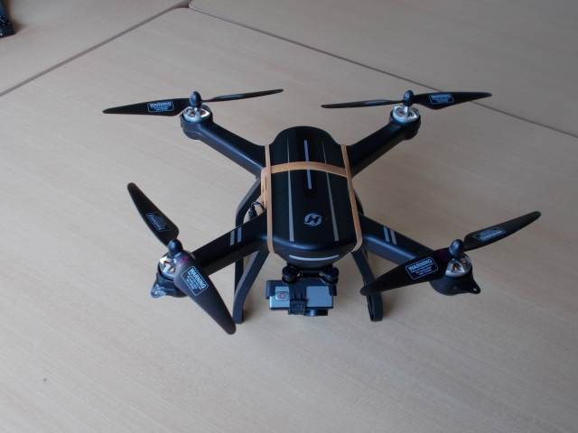
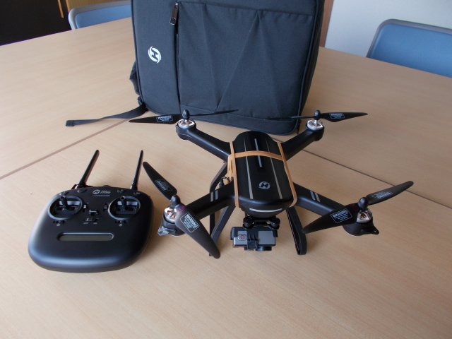

ＨＳ－７００での測量結果
河川の堤防を撮影

河川堤防を空撮 → ３Ｄ化
河川公園３Ｄ

ベンチ・親水広場・飛び石など
大宰府の牛

大宰府の牛
撮影機体

ホーリーストーンＨＳ－７００（旧型）ＤＪＩの機体に比べ、ソフト面は極めて貧弱ですが、動力性能は結構なものです。
撮影機体

機体に本来のカメラのほか、中華アクションカメラをゴムバンドで取り付け、インターバル撮影を行いました。
小型軽量ドローンを使って３Ｄ測量を！
河川堤防を空撮 → ３Ｄ化
ベンチ・親水広場・飛び石など
大宰府の牛
ホーリーストーンＨＳ－７００（旧型）ＤＪＩの機体に比べ、ソフト面は極めて貧弱ですが、動力性能は結構なものです。
機体に本来のカメラのほか、中華アクションカメラをゴムバンドで取り付け、インターバル撮影を行いました。